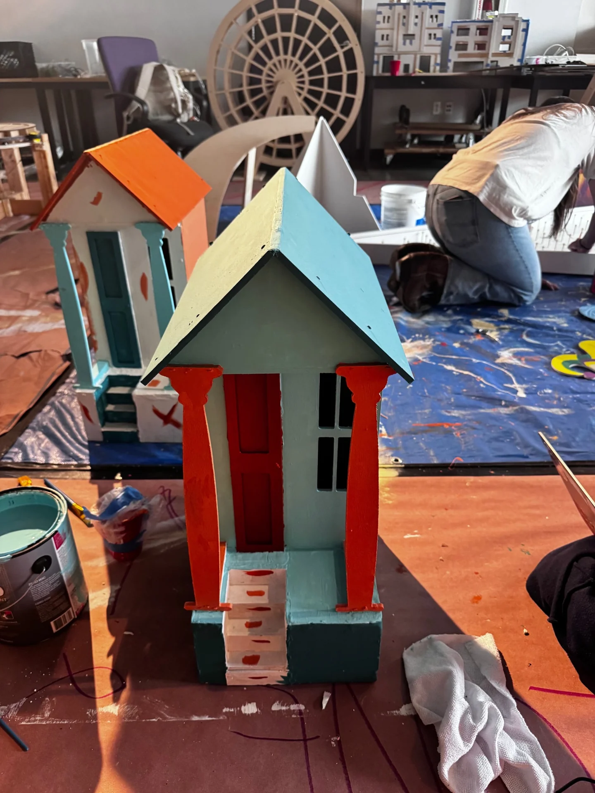

01 / Mini golf design
Raceway USA
A little course. A world of possibility.

The project
A themed miniature-golf design project explored through scenic models and hands-on making. The collection follows the construction of individual scenic elements, including a horse sculpture, as scale, materials, and fabrication become part of the design process.
- Context
- Physical design & modelmaking
- Creative focus
- Spatial design
Scenic modelmaking
Fabrication - Contribution & credits
- Project-specific responsibilities and final credits are being confirmed.
Design & development
Bringing the course to life
Studio photographs document the construction of scenic structures, miniature environments, and the horse sculpture for Raceway USA.
A selection of supplied project imagery and process studies. The portfolio will continue to grow as new work is documented.